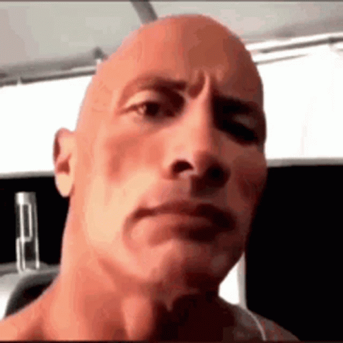
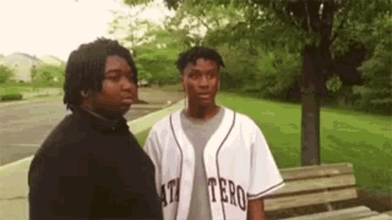

Gen Z Memes
Introduction
A webpage explaining some of the most popular "Generation Z Memes" to other people who don't get them so they can relate. This webpage contains everything there is to know about the most known Gen Z memes, so that other generations who don't get them can relate, especially when watching on:
- Youtube
- YouTube Shorts
- TikTok
The Rock's Eyebrow Raise
The Rock's Eyebrow Raise refers to a reaction video of actor and former professional wrestler Dwayne "The Rock" Johnson raising his eyebrow accompanied by the Vine Thud sound effect. The memes first gained popularity in March 2021, achieving a major surge in September 2021 as memers paired the reactions with Among Us memes, which were used to convey suspicion.
On October 9th, 2019, Dwayne "The Rock" Johnson posted an Instagram video addressed to rapper DaBaby, and at the end of said video, he did the iconic expression.
Roughly 2 years later, on February 19th, 2021, Dwayne "The Rock" Johnson posted a TikTok video set to "Ice Ice Baby" by Vanilla ice in which he does the iconic expression.
Due to the meme gaining virality during 2020, which was the time of Among Us memes, the meme was sometimes used in conjunction with the Among Us memes to signify something "sus", which is just a shortened term of "suspicious"
This meme is a bit special, since it's used in both a video format if you're scrolling through YouTube shorts or TikTok and a GIF format in messaging apps.

Man Disappearing
Nileseyy Niles Disappears, also known as "Man disappearing meme", is a photo series based on a video by the comedian Nileseyy Niles. The photo series or GIF is often used to indicate someone or yourself leaving an embarrassing situation.
Nileseyy Niles posted three successive Vine videos, in which he is either in a confusing or aggressive situation. In each video, he holds up a peace sign ✌ and uses a special effect to disappear.
On June 19th, 2015, Twitter user "chanelpuke" used Twitter's "multiple image upload" feature to upload a series of screen captures from Nileseyy Niles's third disappearing Vine, "When you not tryna get jumped." The series of images were frequently used on Twitter after that.
Roughly 4 months after it went viral on Twitter, on October 10th, 2015, Nileseyy Niles released a 23 minute video on YouTube called "Disappearing: The Origin," in which he went into detail about his personal life and most importantly, how he gained his disappearing abilities.
Like "The Rock's Eyebrow Raise", "Nileseyy Niles Disappears" is also special, since it can be considered both an image-based meme and a GIF meme, since you can find the image format when you look at meme compilations, and the GIF format in messaging apps.

{kind=link}